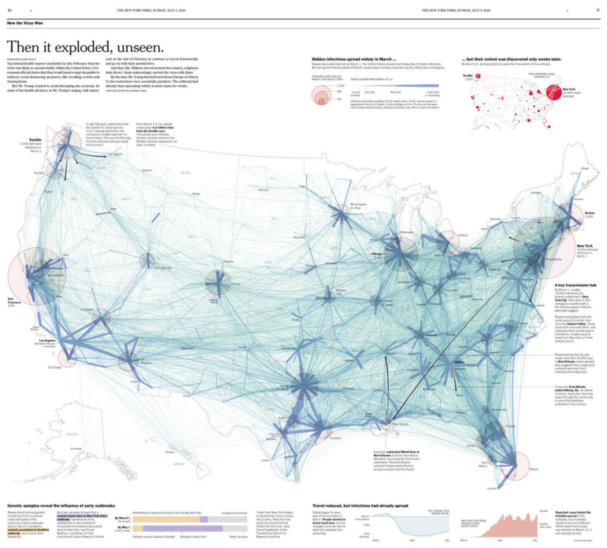
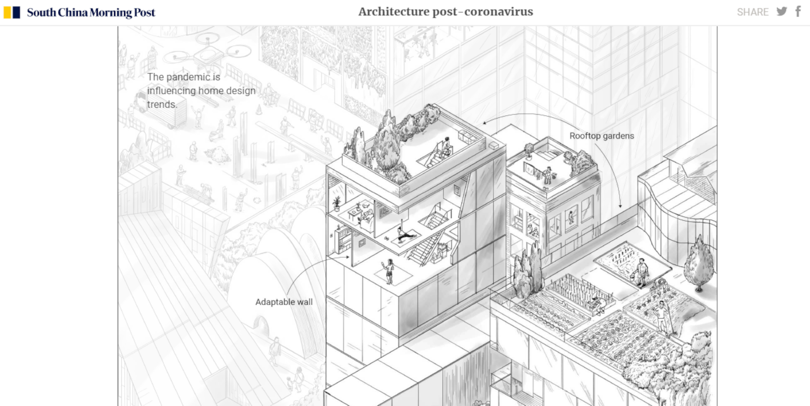
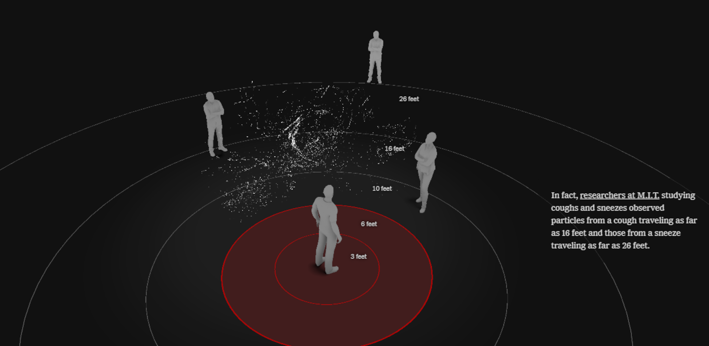
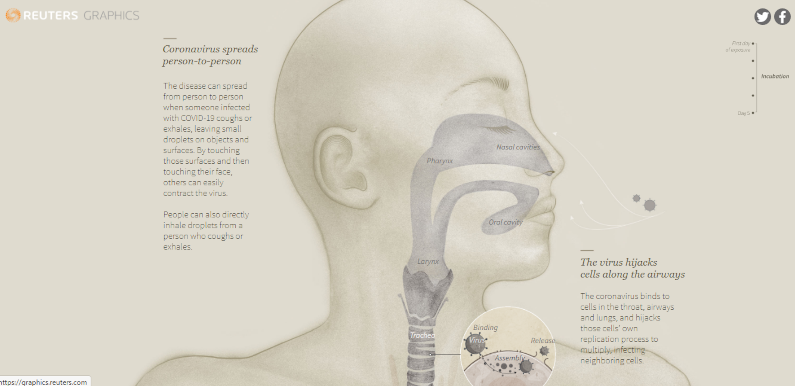
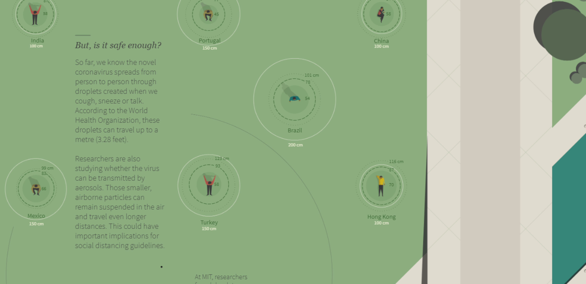
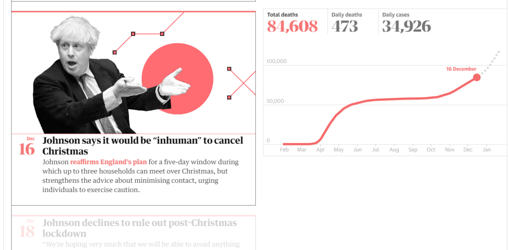
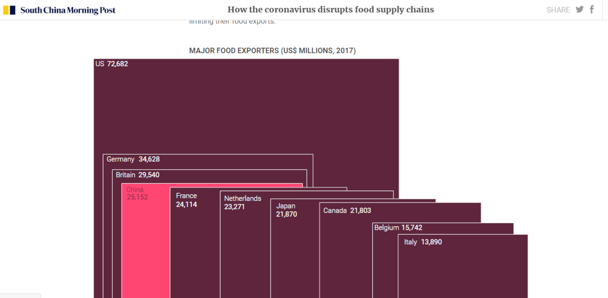
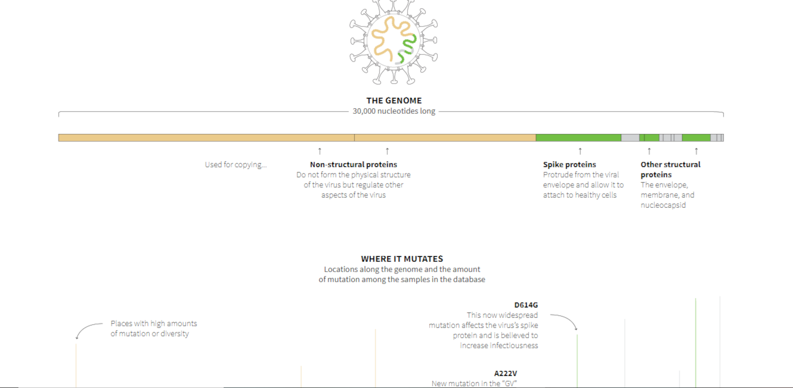

Información en gráficos figurativos

Como el virus ganó
Publicado en The New York Times.

Paredes adaptables, techos con jardín, sistemas de filtración...
Publicado en South China Morning Post.

Esta simulación en 3D muestra por qué la distancia social es tan importante
Publicado en The New York Times.

Ingreso del virus en el cuerpo
Publicado en Reuters Graphics.
Información en gráficos no figurativos

Nueva Normalidad
Publicado en Reuters Graphics.

Johnson dice que seria inhumano cancelar Navidad
Publicado en The Guardian UK.

Como el coronavirus disrumpe en la cadena de alimentos
Publicado en South China Morning Post.

Evolución del nuevo coronavirus
Publicado en Reuters Graphics.